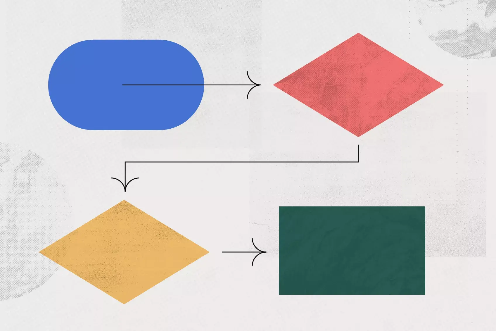

<map name="workmap">
  <area shape="rect" coords="34,44,80,100" alt="Computer" href="computer.htm">
  <area shape="rect" coords="200,44,60,100" alt="Phone" href="phone.htm">
  <area shape="circle" coords="34,150,80,100" alt="Coffee" href="coffee.htm">
</map>